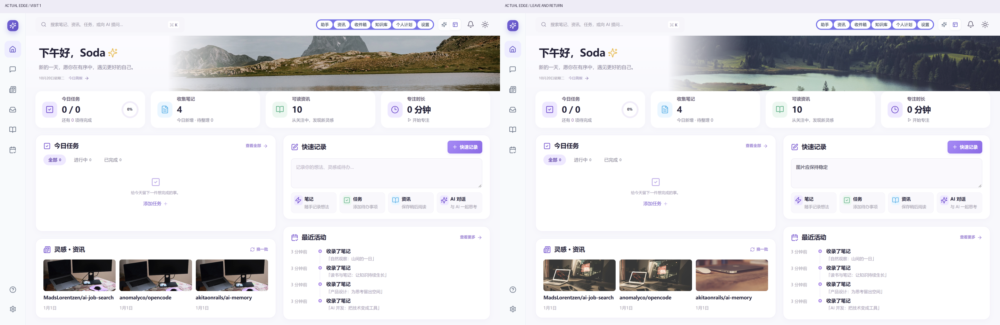
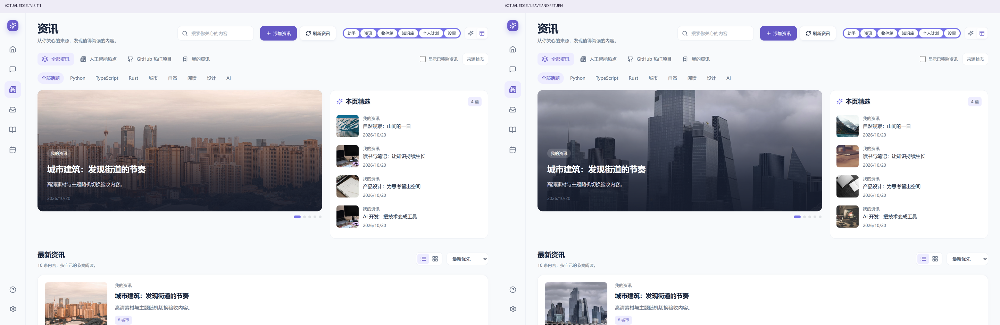
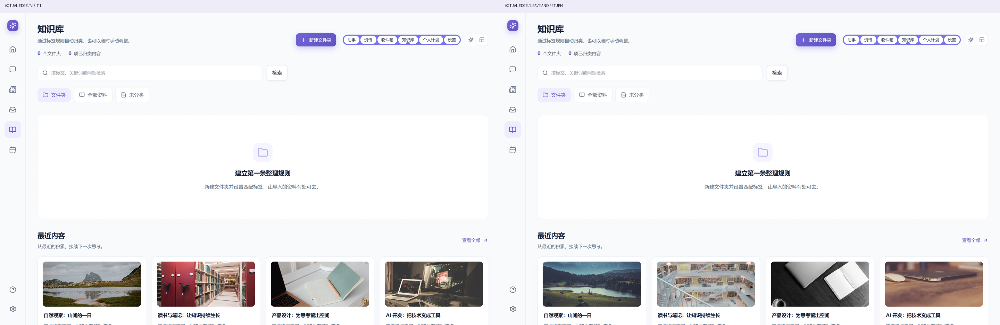
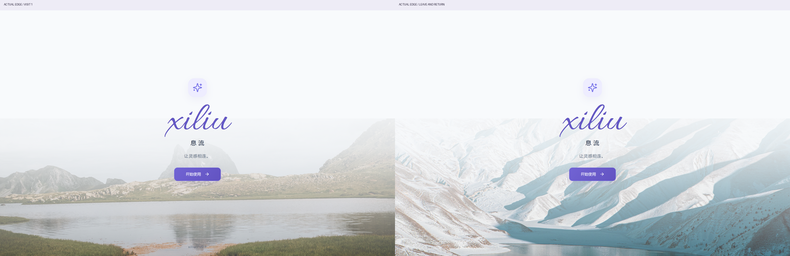
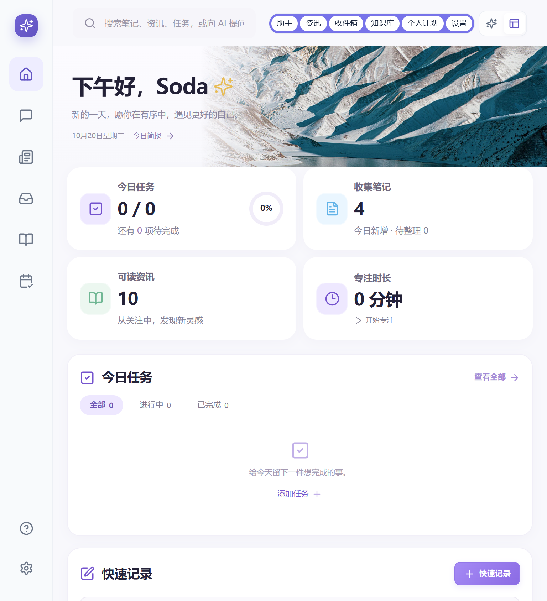
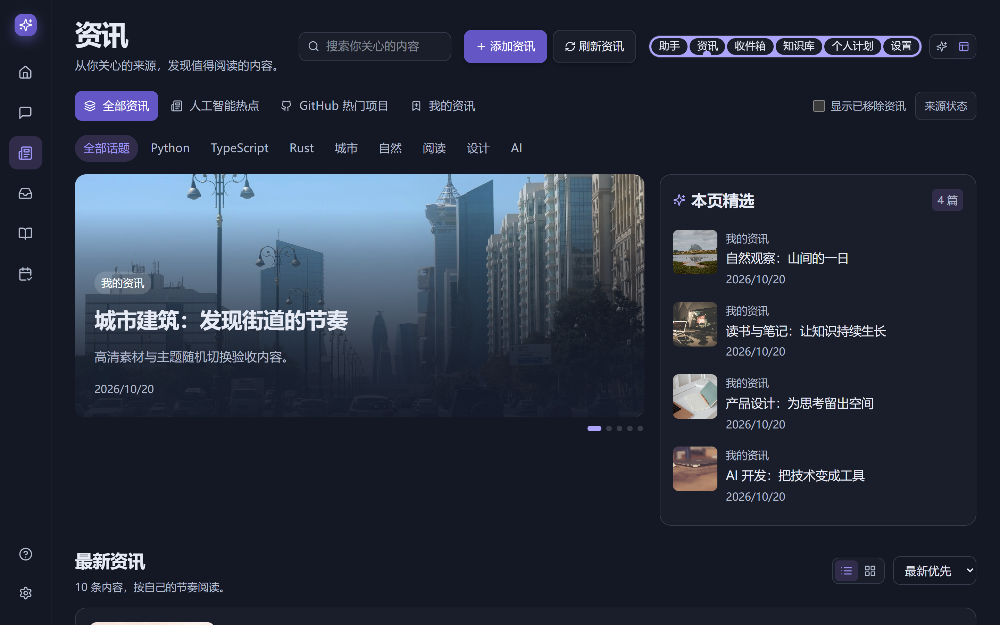

息流 · 高清主题素材与随机切换
16 张摄影 / 5 类主题 / 本地高清响应式 WebP。进入时随机，页内操作保持稳定，连续进入避免原图重复。
打开实际应用 · 修改文件、来源与测试结果
248 项前端测试通过，Lint / TypeScript / 生产构建通过；实际 Edge 8 组检查通过，0 页面脚本错误。
素材池（点击查看最大尺寸）
实际切换对比
山水首页 · 首次进入 / 离开再返回

Feed 资讯 · 首次进入 / 离开再返回

知识库 · 首次进入 / 离开再返回

启动页 · 首次进入 / 离开再返回

移动与主题状态
today-390
feed-390
knowledge-390
today-768

home-dark-large
feed-dark-large

knowledge-no-external-network